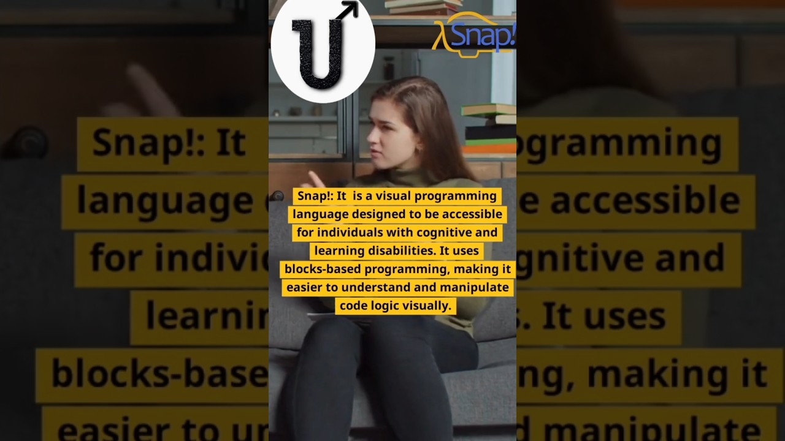
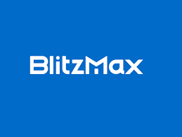
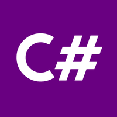

Programming Languages for Accessibility and Inclusion: Empowering Disabled People
Introduction
Click here to see the short video of this tutorial. In this blog, we will see programming Languages made for Disabled PeopleIn the digital age, programming has grown in importance and provides endless opportunities for creativity and innovation. Traditional coding environments, however, could be difficult for those with disabilities. Thankfully, a number of programming languages and tools have developed to remove these obstacles, allowing disabled people to actively engage in the programming community. In this article, we'll look at a few programming languages like BlitzMax, C#, Audacity, Snap!, and VoiceCode that were created with inclusivity and accessibility in mind.

BlitzMax: BlitzMax is an approachable programming language created especially to speed up game creation. It has a straightforward syntax and user-friendly interfaces, making it accessible to people with a range of disabilities. The visual editor and integrated development environment for the language users can build interactive experiences using (IDE) without having considerable coding knowledge. BlitzMax provides a friendly setting for people with disabilities to tap into their creativity and make a contribution to the video game industry.

C#: C# (pronounced C-sharp) is a flexible programming language that is popularly utilised in many industries, including the creation of desktop applications, websites, and video games. It is a viable option for programmers with disabilities thanks to its accessibility features, which include support for alternative input methods and compatibility with screen readers. The numerous libraries and frameworks made available for C# offer extra tools and resources to improve accessibility and give people with disabilities the ability to create potent software solutions.
Despite not being a true programming language, Audacity: is a free audio editing programme with several useful accessibility features. It has a straightforward user interface. And keyboard shortcuts, making it suited for people with limited dexterity or vision problems. Audacity is a crucial tool for a variety of applications, including multimedia creation, podcasting, and audio engineering because it enables impaired people to make, edit, and manipulate audio recordings.
Block-based programming language Snap!: places a strong emphasis on simplicity and usability. It allows users to build interactive programmes by dragging and connecting visible code blocks. Snap!'s visual format is perfect for people with cognitive or learning difficulties since it lessens the cognitive strain that comes with standard text-based programming. Snap! enables people with disabilities to communicate their thoughts, work through issues, and use computational thinking.
VoiceCode: VoiceCode offers a voice-activated programming experience, raising the bar for accessibility. VoiceCode is an add-on for the Atom text editor that enables people with dexterity or mobility issues to write code using voice commands. VoiceCode uses speech recognition technology to let programmers with disabilities use natural language input to explore the code, carry out commands, and amend their programmes. Through the use of this cutting-edge tool, we can see how voice-controlled programming environments can facilitate inclusive coding experiences.
Conclusion
The availability of programming languages and tools created especially for people with disabilities has created new possibilities for accessibility and inclusion in the programming community. These programming languages and tools are powerful, whether it be the streamlined syntax of BlitzMax, the adaptability of C#, the audio editing capabilities of Audacity, the block-based methodology of Snap!, or the voice-activated experience offered by VoiceCode. enabling impaired programmers to solve issues, express their creativity, and advance technology.
Prioritising accessibility and diversity in programming languages and development environments is vital as technology develops further. We can build a more varied and equitable programming world where everyone has the chance to participate and flourish by adopting these tools and supporting an inclusive coding community.
Thank you for being with me throughout the blog. Meet you in the next blog.